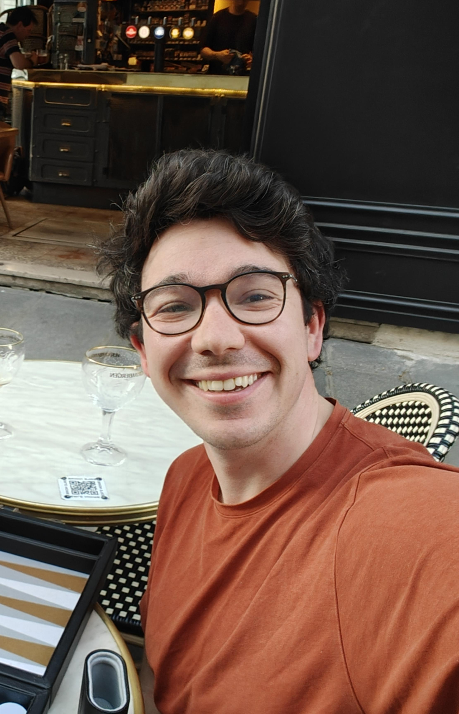

Nicolas Harmand
Chercheur en physique du vivant Researcher in Physics of Living Systems
Laboratoire Jean Perrin — Sorbonne Université / CNRS, Paris
J'utilise les concepts de la physique et de la physico-chimie de la matière molle pour comprendre le vivant. Mon approche repose sur des expériences visant à éprouver les modèles existants ou co-construits avec des théoriciens (notamment mécaniques), afin d'en tester les limites de validité ou d'en dégager de nouveaux principes fondamentaux.
Ingénieur ESPCI de formation et docteur en biophysique, après un passage par la R&D industrielle (Saint-Gobain), je travaille aujourd'hui au Laboratoire Jean Perrin. Mes travaux actuels s'appuient sur des approches expérimentales (notamment des gouttes senseurs de force) et de la modélisation pour explorer la physique de la morphogenèse.
I apply the concepts of soft matter physics and physical chemistry to understand living systems. My approach relies on experiments designed to test existing physical models, or models co-developed with theorists (particularly mechanical models), in order to test their limits of validity or uncover new fundamental mechanisms.
With a background as an ESPCI engineer and a PhD in biophysics, followed by a period in industrial R&D (Saint-Gobain), I now work at the Laboratoire Jean Perrin. My current work combines experimental approaches (specifically force-sensing droplets) and modeling to explore the physics of morphogenesis.

Intérêts de Recherche Research Interests
- Microrhéométrie & Forces tissulaires : Mesure des forces mécaniques de la matrice extracellulaire via des senseurs de force ferrofluides in situ lors du développement embryonnaire.
- Mécanique des tissus épithéliaux : Compréhension de la forme 3D et des contraintes d'épaisseur des cellules épithéliales sur des courbures physiques en s'appuyant sur des modèles de matière molle.
- Microrheometry & Tissue Forces: Measuring mechanical forces of the extracellular matrix using in situ ferrofluid force sensors during embryonic development.
- Epithelial Tissue Mechanics: Understanding the 3D shape and thickness constraints of epithelial cells on physical curvatures using soft matter models.
Éducation Education
Doctorat en Biophysique PhD in Biophysics
Université Paris Diderot — Laboratoire MSC, Paris
Diplôme d'Ingénieur & Master 2 ICFP Engineering Degree & M2 ICFP
ESPCI Paris / Sorbonne Université — Paris